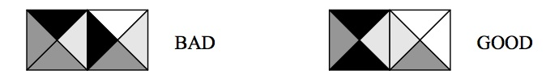
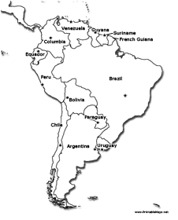
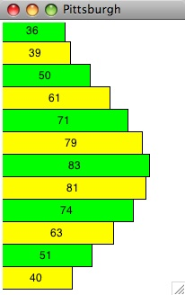

15-105 SPRING 2009 [CORTINA]
HOMEWORK 7 - due Friday, March 27
WRITTEN PROBLEMS (8 pts)
Hand these problems in on paper in class on the due date specified.
- (1.5 pts)
You write the following statement in Python, where x is an integer greater
than 0:
y = (x**3 + 2*x) / 3
Remember in Python that when you divide one integer by another, you may
get a truncation error since you lose
the fractional part of the result. For example, 11/3 in Python is 3, not
3.6666666.... You are concerned that you might
get a truncation error when it is stored in y,
but someone tells you that x3 + 2x is always
evenly divisible by 3 when x is positive, so there is never any truncation
error. You will use induction to verify this.
-
Show that the Python statement has no truncation error for x = 1.
-
Assume the statement has no truncation error for some integer x ≥ 1.
Show that the statement has no truncation error for x+1. Put another way,
assuming x3 + 2x is evenly divisible by 3 for an integer x ≥
1, show that (x+1)3 + 2(x+1) is also evenly divisible by 3.
HINT: Expand (x+1)3 + 2(x+1) algebraically, extract out
x3 + 2x, and look at what is left.
-
How do steps (a) and (b) prove that the Python statement computes
correctly without truncation error for all integer x ≥ 1?
- (1.5 pts)
Let A be a vector of N integers in increasing order, N > 0. There are no
duplicates. Consider the following algorithm for binary search (div means
integer division - i.e. discard the fractional remainder when you divide).
This algorithm outputs the index of the target if it is in the array and
-1 if it is not.
1. Set low = 0.
2. Set high = N-1.
3. Set mid = (low + high) div 2.
4. While low ≤ high and target ≠ A[mid] do the following:
a. If target < A[mid], set high = mid-1; otherwise, set low = mid+1.
b. Set mid = (low + high) div 2.
5. If low ≤ high, output mid.
Otherwise, output -1.
-
Trace this algorithm for the following vector (N=9) and a target value of
73, showing the value of low, high, and mid immediately before the loop
starts and after each iteration of the loop. What is the final value that
is output?
0 1 2 3 4 5 6 7 8 9 10
------------------------------------------------------
| 13 | 29 | 33 | 40 | 58 | 64 | 68 | 73 | 89 | 92 | 99 |
------------------------------------------------------
-
Repeat part (a) for a target value of 36.
-
If you had 1 billion data values in increasing order and you had to
search for a specific target using binary search, approxmiately how many
data values do you need to look at in order to determine if the target is
present or not? Explain your answer.
- (1.5 pts)
You have three algorithms to solve a problem. The problem involves
examining N objects for defects. Each examination of an object takes 1
minute.
- How long would it take to examine 4 objects (i.e. N=4) if your
algorithm requires the following number of steps:
- Algorithm 1: log2N steps
- Algorithm 2: N2 steps
- Algorithm 3: 2N steps
- How many more minutes would be needed to use the same
algorithms above
if you examined four times as many objects (i.e. N=16)?
- Which of the three algorithms would you use on a warehouse of 1
million objects? Explain.
- (1.5 pts)
In an American Idol competition, there are 10 contestants. Each
constestant sings one song, and then one contestant is eliminated. The
remaining contestants sing one song each, and then one contestant is
eliminated again. This continues until one contestant remains and is
declared the winner. The winner sings one song at the end of the
competition.
- How many songs are sung in this competition if it starts with 10
contestants? Show your work.
- If there were N contestants in this competition, N > 0, exactly how
many songs are sung in this competition as a function of N?
- Answer part (b) using Big O notation in simplest form.
Explain what your big O notation says about this problem.
-
A museum has 12 square canvases. Each has two diagonal
lines separating the canvas into four triangular regions. Each
region is painted with a solid color.
The museum wants to display the canvases in a 4 X 3 grid so that
triangular regions of
two canvases that are touching have the same color. Here are examples
with 2 canvases only:

-
Assuming the museum does not rotate the canvases, how many different
configurations have to be checked in the worst case to see if there is a
possible way to display the artwork? Explain your answer.
-
If the museum takes 1 minute to set up one 4 X 3 configuration, how
long would it take to check all possible configurations to see if one
meets their display criteria? Express your answer in years.
-
You are asked to create a map of South America for a company brochure but
you are asked to use only 3 colors to fill in all of the countries. South
America consists of 13 countries. See the map below.

-
Determine if there is a valid coloring for this map using the colors
red, green and yellow. If there is, give the color for each country. If
not, explain why.
-
In general, for a map with 13 countries, if each country can be
colored with one of three colors, how many possible color
assignments are there? NOTE: We're not asking for how many valid
assignments there are, only how many total assignments there are.
COMPUTER PROBLEM (2 pts)
Hand this in electronically using the
Electronic Handin System by 11:59PM on the due
date indicated.
The average high temperature for Pittsburgh in Fahrenheit
is given by the following data:
January 36
February 39
March 50
April 61
May 71
June 79
July 83
August 81
September 74
October 63
November 51
December 40
Write a Python program that stores these temperature values in an array.
You do not
need to read these values from the keyboard. You can just set up an array
with these temperature values directly. Then
create a window that is 200 pixels wide by 300 pixels high. In this
window, draw a bar graph that shows these temperatures from January
at the top to December at the bottom. The left edge of the window
represents 0o and the right edge of the window represents
100o.
Each bar should be 25 pixels high.
The width of each bar depends on the temperature for each month.
The colors of the bars should alternate between green
and yellow. Each bar should include text that displays the temperature
for that month, centered along the bar.
Helpful programming hints:
You should write this program using a loop that repeats 12 times
so you don't have to write the same general
code 12 times.
To alternate
colors, check the value of your loop variable: use green for even, use
yellow for odd. Here is what the final output should look like:

NOTE: Your final program should work for any temperature data (between 10
and 100), not just Pittsburgh's temperatures.